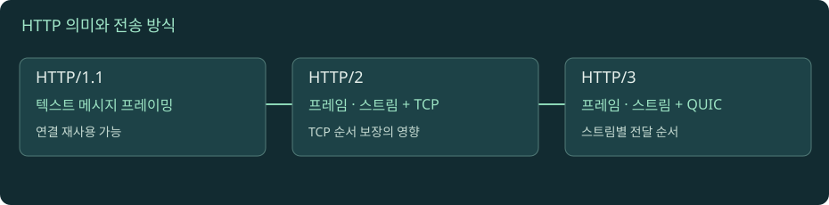

HTTP 버전과 스트리밍: 같은 의미를 다른 통로로 보낸다
HTTP/1.1의 순서 제약, HTTP/2의 프레임과 다중화, HTTP/3의 QUIC를 비교합니다. SSE·WebSocket·스트리밍의 차이를 연결 수보다 메시지의 방향과 수명으로 이해합니다.

다중화와 손실 비교
자바스크립트를 켜면 실험을 조작할 수 있습니다. 아래 본문·도식·실습은 그대로 읽을 수 있습니다.
01. 1. HTTP 의미와 전송 표현을 분리한다
GET으로 자원을 조회하고, 상태 코드와 헤더를 해석한다는 HTTP 의미는 버전이 바뀌어도 유지됩니다. 바뀌는 핵심은 메시지를 연결 위에 표현하고 여러 교환을 배치하는 방식입니다. HTTP/1.1의 요청 줄과 헤더를 눈으로 읽을 수 있다고 해서 HTTP/2도 같은 문자열을 그대로 보내는 것은 아닙니다. HTTP/2는 바이너리 프레임, HTTP/3는 QUIC 스트림을 사용합니다. 개발자 도구의 헤더 화면은 이해를 위한 표시이며 실제 전선 위 바이트 형식과 같다는 보장은 없습니다.
문제를 분석할 때는 두 질문을 나눕니다. 첫째, 서버가 어떤 응답 의미를 보냈는가? 둘째, 그 메시지가 어떤 연결과 스트림에서 지연되었는가? 같은 200 응답도 느린 스트림, 프록시 버퍼, 큰 다운로드 때문에 늦게 보일 수 있습니다. 반대로 HTTP/3라고 해도 DB 조회가 오래 걸리면 첫 바이트는 늦습니다. 버전 선택은 모든 병목을 없애는 스위치가 아니라 특정 전송 제약을 바꾸는 설계입니다. 아래 비교 그림은 동일한 세 자원을 요청하는 교육용 스케줄이며 실제 브라우저의 우선순위와 연결 수 정책을 그대로 재현하지 않습니다.
02. 2. HTTP/1.1: 연결 재사용과 응답 순서의 비용
연결을 열고 요청 하나를 보내고 닫기를 반복하면 설정 비용이 커집니다. HTTP/1.1에서는 연결을 재사용할 수 있습니다. 하지만 흔한 비파이프라이닝 사용에서는 한 연결에 요청과 응답을 차례로 처리하므로, 긴 응답 뒤의 요청이 기다립니다. 파이프라이닝을 하더라도 응답 순서 제약이 남습니다. 브라우저는 여러 연결을 열어 자원 병렬성을 확보해 왔지만 연결마다 설정과 자원을 소비합니다.
예를 들어 A 이미지가 2초, B 스타일시트가 50ms, C 스크립트가 70ms 걸리는 상황을 생각해 보세요. 한 연결에 순서대로 처리하면 B와 C의 작은 작업도 A 뒤로 밀립니다. 그렇다고 “HTTP/1.1은 언제나 모든 요청을 직렬 처리한다”고 말하면 틀립니다. 여러 연결을 사용할 수 있기 때문입니다. 그림에서는 먼저 연결 하나로 비교한 뒤, 실제 환경에서는 연결 수·호스트 분리·캐시·의존성으로 결과가 달라진다고 해석해야 합니다. 작은 파일을 하나로 합치는 최적화도 버전과 캐시 갱신 단위에 따라 이득과 비용이 달라집니다.
03. 3. HTTP/2: 프레임과 스트림으로 응답을 섞는다
HTTP/2에서는 하나의 요청·응답 교환을 스트림으로 구분하고, 연결 위에 여러 스트림의 프레임을 섞어 보낼 수 있습니다. 큰 A 이미지 전송 중에도 B 스타일시트의 프레임을 보낼 수 있으므로 HTTP/1.1의 응답 순서 제약을 완화합니다. 헤더 압축과 연결 재사용도 반복 전송 비용을 줄입니다. 하지만 다중화는 대역폭을 복제하는 것이 아닙니다. 같은 링크를 공유하는 10개의 다운로드가 각각 링크 전체 속도로 동시에 진행하지는 않습니다.
프레임을 섞을 수 있다는 사실은 서버가 모든 작업을 동시에 시작한다는 뜻도 아닙니다. 동시 스트림 제한, 서버 작업 큐, 흐름 제어, 클라이언트 우선순위, 업스트림 연결 제한이 남아 있습니다. 스트림 식별자는 어떤 프레임이 어떤 교환에 속하는지 구분하는 수단이지 업무 요청의 멱등성 키가 아닙니다. 로드밸런서가 클라이언트 HTTP/2를 받아 업스트림 HTTP/1.1로 변환한다면, 앞 연결만 관찰해 뒤 연결의 병렬성을 단정할 수 없습니다. RFC 9113 §5
04. 4. HTTP/2에도 TCP 수준의 대기가 남는다
HTTP/2 스트림이 독립적이어도 기반 TCP는 순서가 있는 바이트 스트림 하나를 전달합니다. 앞부분의 바이트가 손실되어 뒤 데이터가 도착해도, TCP는 빠진 부분을 복구할 때까지 애플리케이션에 순서대로 전달해야 합니다. 그래서 한 패킷의 손실이 여러 HTTP/2 스트림이 사용할 데이터의 전달을 함께 늦출 수 있습니다. 이것을 HTTP 응답 순서 제약과 구분하여 전송 계층의 head-of-line blocking이라고 설명합니다.
이 차이는 “다중화했는데 왜 모든 요청이 잠깐 멈췄나”라는 질문에 중요합니다. 답을 곧바로 TCP 손실로 확정하라는 뜻은 아닙니다. CPU 정지, 연결 흐름 제어, 프록시 버퍼도 비슷한 화면을 만들 수 있습니다. 패킷 증거와 연결 지표 없이 워터폴 모양만 보고 원인을 단정하면 안 됩니다. 실험에서 손실 토글을 켰을 때는 교육 모델이 의도적으로 연결 단위 대기를 보여 주는 것입니다. 실제 손실 회복 시간은 RTT, 혼잡 제어, 재전송 방식에 따라 다르며 이 부분의 알고리즘은 기존 TCP/IP 교재에서 깊게 다룹니다.
05. 5. HTTP/3: QUIC가 바꾸는 경계와 남는 제약
HTTP/3는 TCP 위에 HTTP/2를 조금 바꿔 얹는 프로토콜이 아닙니다. QUIC 위에서 HTTP 의미를 표현합니다. QUIC는 UDP를 사용하지만 신뢰할 수 있는 스트림, 손실 복구, 혼잡 제어를 자체적으로 제공합니다. 따라서 “UDP니까 유실을 무시한다”는 설명은 맞지 않습니다. 서로 다른 스트림의 순서 전달을 분리하여 한 스트림의 손실 때문에 다른 스트림의 도착한 데이터까지 같은 방식으로 대기하는 문제를 줄입니다. RFC 9000 §2
독립성이 무제한이라는 뜻은 아닙니다. 혼잡 제어로 사용할 전체 전송량이 줄면 여러 스트림의 처리량이 영향을 받고, 제어 스트림이나 헤더 압축 의존성도 고려해야 합니다. 방화벽이나 프록시 경로에서 UDP가 제한되면 HTTP/3를 사용할 수 없고 다른 버전으로 연결될 수 있습니다. 클라이언트의 지원, 서버 광고, ALPN, 네트워크 경로를 모두 확인해야 합니다. “HTTP/3를 켰으니 모든 사용자가 HTTP/3”라고 보고하면 안 됩니다. RFC 9114
06. 6. 스트리밍은 한 응답을 조금씩 전달하는 방식이다
서버가 전체 결과를 완성한 뒤 한꺼번에 보내는 대신 조각을 순차적으로 전달하면 클라이언트는 더 일찍 일부 결과를 볼 수 있습니다. 그러나 서버가 write를 호출했다는 사실만으로 브라우저가 즉시 렌더링했다고 볼 수 없습니다. 애플리케이션 버퍼, 압축기, 리버스 프록시, 운영체제, 클라이언트 파서가 데이터를 모을 수 있습니다. 전송 조각 하나가 업무 메시지 하나와 일치한다는 가정도 피해야 합니다. 수신 측은 임의 경계로 나뉜 바이트를 프로토콜 규칙에 따라 조립해야 합니다.
HTTP/1.1의 chunked encoding은 길이를 처음부터 모르는 본문을 구분하는 한 방식입니다. HTTP/2와 HTTP/3는 각자의 프레임과 스트림 종료 신호를 사용하므로 같은 chunked 표현을 그대로 적용하지 않습니다. 또한 HTTP가 200 헤더를 보낸 후 스트림 중간에 작업이 실패하면 이미 보낸 상태를 나중에 500으로 바꿀 수 없습니다. 메시지 안의 오류 이벤트, 종료 상태, 재연결·재처리 계약이 필요합니다. 첫 바이트가 빠르다는 지표와 전체 업무 완료가 빠르다는 지표를 따로 측정해야 하는 이유입니다.
07. 7. SSE와 WebSocket은 데이터 방향과 복구 계약이 다르다
SSE는 서버가 클라이언트에 이벤트를 순차적으로 보내는 텍스트 기반 방식입니다. 브라우저 EventSource는 이벤트 스트림을 읽고 연결이 끊기면 재연결을 시도할 수 있습니다. 이벤트 id를 사용하면 재연결 시 마지막 수신 지점을 전달할 수 있지만, 서버가 과거 이벤트를 보관하고 재전달하는 기능까지 자동으로 생기지는 않습니다. 중복 수신이나 누락을 어떤 기준으로 처리할지는 서비스 계약으로 정해야 합니다. WHATWG 서버 전송 이벤트
WebSocket은 연결 설정 후 양방향 메시지를 교환합니다. 대표적인 HTTP/1.1 경로에서는 Upgrade를 사용하며 이후 메시지 프레임 규칙으로 동작합니다. 모든 버전의 연결 설정이 같은 방식은 아닙니다. 채팅 입력처럼 양쪽이 자주 독립적으로 보내면 유용하지만, 재접속, 인증 갱신, heartbeat, 느린 수신자 관리가 필요합니다. TCP가 신뢰성 있게 전달하더라도 연결이 끊긴 뒤 어떤 업무 메시지까지 처리되었는지는 별도 문제입니다. 단순 상태 알림에는 SSE가 충분할 수도 있고, 요청·응답이 드물면 폴링이 운영상 더 단순할 수도 있습니다. RFC 6455
08. 8. 연결 수명이 길어지면 운영 질문도 바뀐다
짧은 REST 요청은 수백 ms 안에 끝나지만 이벤트 연결은 수시간 유지될 수 있습니다. 프록시의 idle timeout보다 서버의 이벤트 간격이 길면 정상 서버에서도 연결이 끊어집니다. heartbeat는 이런 유휴 구간을 다루는 방법이지만 무조건 짧게 보내면 연결 수만큼 네트워크와 CPU 비용이 늘어납니다. 일시적인 배포나 네트워크 복구 후 모든 클라이언트가 동시에 재연결하면 새로운 연결 폭주도 발생할 수 있습니다.
느린 클라이언트를 위해 무한히 송신 대기열을 쌓으면 서버 메모리가 증가합니다. 일정 한도를 넘으면 메시지를 합치거나 연결을 종료하거나 과거 메시지를 다시 조회하도록 설계해야 합니다. 이를 backpressure 관점에서 봅니다. 연결이 열려 있다는 지표보다 마지막 메시지 시각, 송신 대기량, 재연결률, 메시지 지연을 함께 봐야 합니다. 실습에서는 네트워크 속도 제한을 걸어 첫 메시지 시각과 전체 완료 시각의 차이를 관찰하세요. 서버 출력과 클라이언트 화면 사이의 모든 계층이 스트리밍을 유지하는지 확인하는 것이 핵심입니다.
09. 9. 선택 연습: 다운로드 진행률 알림을 어떻게 전달할까
파일 변환이 평균 5분 걸리고 사용자는 10초 간격으로 진행률만 확인한다고 합시다. 10초 폴링은 구현과 재시작 복구가 단순하지만, 사용자가 많으면 상태가 바뀌지 않아도 반복 요청이 발생합니다. SSE는 변경 시점에 서버가 알릴 수 있지만 긴 연결의 수명과 재연결을 운영해야 합니다. 사용자가 양방향으로 고빈도 편집 메시지도 보낸다면 WebSocket을 고려할 근거가 생깁니다. “실시간”이라는 이름만으로 한 기술을 고르지 말고 허용 지연, 방향, 빈도, 끊김 복구를 먼저 적으세요.
어떤 방식을 선택해도 작업 상태의 기준은 서버에 남아 있어야 합니다. 연결이 끊겼다고 변환 작업이 사라지는 것은 아니고, 알림 메시지를 한 번 놓쳤다고 완료 사실이 영원히 보이지 않게 만들면 안 됩니다. 알림은 상태 변화를 빨리 알리는 경로, 조회 API는 현재 상태를 다시 확인하는 경로로 설계할 수 있습니다. 이는 전송 프로토콜과 업무 상태 모델을 분리하는 연습입니다. HTTP/2나 HTTP/3로 바꾸어도 이 복구 계약이 자동으로 생기지는 않습니다.
실습 · 실제 협상 버전과 스트리밍 관찰
curl -V에서 HTTP2 또는 HTTP3 지원 여부를 확인합니다. 지원하지 않는 기능을 명령 옵션으로 요청해도 새 기능이 설치되지는 않습니다.curl -sS -o /dev/null -w 'version=%{http_version} total=%{time_total}\n' https://example.com/을 실행해 협상된 버전을 기록합니다. 공개 서버의 정책과 경로에 따라 결과가 달라집니다.- 지원되는 환경에서
--http1.1과--http2를 각각 붙여 비교합니다.--http2요청이 실제로 협상되었는지 출력으로 확인합니다. 한 번의 시간 차이를 버전의 보편적 성능 차이라고 결론 내리지 않습니다. - 브라우저 개발자 도구에서 Network의 Protocol, Waterfall, Initiator 열을 확인합니다. 같은 연결의 자원과 먼저 완료되어야 시작되는 의존 자원을 구분합니다.
- 도식에서 같은 크기의 자원, 하나의 큰 자원과 여러 작은 자원, 손실 발생을 차례로 비교합니다. 전송 계층 대기와 서버 처리 대기를 따로 말합니다.
- 이미 사용 중인 SSE 서비스가 있다면 EventStream과 재접속 시점을 관찰합니다. 테스트 서버가 없다면 이 교재의 단계별 스트림 그림으로 메시지 조립을 확인합니다. 로컬 HTTP 실습 서버는 SSE·WebSocket 서버를 구현한다고 가정하지 않습니다.
예상 관찰: 버전 표시가 달라도 메서드·상태 코드 의미는 같습니다. HTTPS 패킷을 일반 캡처로 본다고 HTTP 프레임의 평문이 자동으로 보이지는 않습니다. TLS 복호화에는 별도의 적법한 키 자료와 도구 설정이 필요합니다. curl 옵션, Chrome Network 참고서
로컬 실습 서버 실행과 공통 명령은 실습 안내에서 확인하세요. 실제 HTTPS·HTTP/2·HTTP/3 서버를 제공하는 실습은 아닙니다.
이해도 확인
선택 후 이유를 설명하고 정답을 확인하세요.
원전과 더 읽을 자료
표준과 공식 문서를 참고해 독립적으로 구성한 학습 설명입니다. 예시 결과와 시간은 명시한 경우를 제외하면 교육용입니다. 확인 기준: 2026-11-09.
진행률은 현재 브라우저에 저장됩니다. 파일 직접 열기와 HTTP 접속은 저장 공간이 다를 수 있습니다.